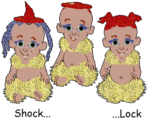

New Babyz
Click photo or name to download.
NEW!!For the Pasted-Head babyz, go to the
Headbanger babyz page
For the Faerie babyz, go to the
Faerie babyz page
For the Oddballz babyz, go to the
Babyz Oddballz page
For the Fishies, go to the
Babyz Fishies page
For the butterflies and spiders, go to the
Babyz Arthropods page
For the Valentine Hearts, go to the
Babyz Hearts page
For the anatomically correct babyz, go to the
Real Babyz page
For the Pharaoh babyz, go to the
Pharaoh babyz page
For the Growing babyz, go to the
Grower babyz page
For babyz with flowers/wings in their hair --
Flower-power babyz page
More babyz with jewels, hair-wings or necklets --
Jewel babyz page
Afrasweet and Miggles are on the jewel babyz page also. Hey, it's my
site, I can do things like that :-)
~~~~~~~~~~~~~~~~~~~~~~~~~~~~~
Here are a few unusual boy babyz for you. Each is distinctive in a special way...
Xmyboy
Xmyboy has a very unusual hairstyle that shimmers as he moves

Shock2Lock
Shock2Lock starts as Shock and, as the days of play pass in the game he
morphs into Lock. Thanks to Nika for the idea of a Shock and Lock baby
:-)
Tigger
Tigger has a tail which moves around as he moves. If you want to see him
in his natural state, as shown in the picture, you will need to remove
the White Diaper.clo file from the game's clothes directory.
.